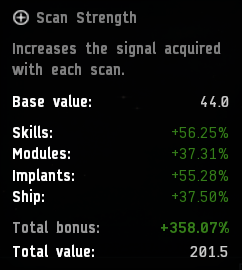
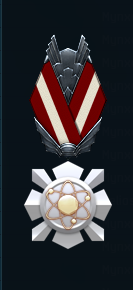

Scan Club: Difference between revisions
Vega Blazar (talk | contribs) No edit summary |
Vega Blazar (talk | contribs) No edit summary |
||
| Line 1: | Line 1: | ||
Note: This page is a WIP. | |||
[[File:Scan Club Logo.png|1000px|center]] | [[File:Scan Club Logo.png|1000px|center]] | ||
| Line 31: | Line 32: | ||
== How Much ISK Will a Blinged Out Scan Club Ship Cost Me? == | == How Much ISK Will a Blinged Out Scan Club Ship Cost Me? == | ||
If you have to ask...just...don't. 🤑 | If you have to ask...just...don't. 🤑 | ||
== How Does One Become a Member of Scan Club? == | |||
Scan Club is open to any Signaleer whose ship attains a **`scan strength of 200 or more`** and then actively uses it in service to New Eden. | |||
== To Join, Just Follow These Simple Steps: == | |||
Post a *single high resolution screenshot*, while in space with your probes deployed, with all the necessary details and you will be welcomed into the club. | |||
Your single screenshot *must* include '''ALL''' four of these items: | |||
* Scan Strength (hover your mouse over the scan strength number in the probe scanner window to display) | |||
* Your Ship Fitting in *list form* (fitting management window) | |||
* Your character sheet showing your Implants | |||
* Your skill sheet displaying ALL seven of your Scanning skills | |||
=== Best Documentation Example: === | |||
[[File:Scan Club Documentation Example.png|800px]] | |||
== In-Game Medal for Scan Club Membership == | |||
Cosmic Strength : ''Awarded to Signaleers who successfully join the ranks of Scan Club and fly in service to New Eden like superheroes.''<br> | |||
[[File:Cosmic Strength Medal.png|150px]] | |||
== Alumni Membership List == | |||
Thrice Hapus '''(1st Helios)''' | |||
Igaze | |||
Angel Lafisques | |||
Shado Step | |||
Chaim Achasse '''(1st 225.7 max scan strength)''' | |||
Yaar Poshipnik | |||
Malachite Ormand | |||
Razorien | |||
Tarja Naskinen '''(1st Pacifier)''' | |||
Tamayo **(1st Anathema)** | |||
System Baud | |||
Nemo Amarodan | |||
Tekufah | |||
Sydney Selket | |||
Void Raven | |||
Mzsbi Haev | |||
JasperTheManiac | |||
Phobus11 | |||
Arthur Dentz '''(1st Cheetah)''' | |||
Ef Cobb | |||
Arturon Megumi | |||
Catbriar Chelien | |||
Floon Audeles | |||
Ezra Endashi | |||
Jehan Dante | |||
Kerrji '''(1st Tengu)''' | |||
Tanabius | |||
Qifara Raholan '''(1st Astero)''' | |||
Livraith Shran '''(1st Buzzard)''' | |||
'''New Members 2021''' | |||
Zinov | |||
Freya Tadaruwa | |||
Rogue Integer | |||
Bren Derrington | |||
Thrases | |||
Sarah Ohu | |||
Aeth E'us | |||
Scout Pilot | |||
Vega Blazar '''(1st Sunesis)''' | |||
Shrike Bonedancer | |||
Saya Tokido | |||
Katherine Skysong | |||
Hax Malochite | |||
'''New Members 2022''' | |||
Woody Hi | |||
Reaver Decimator | |||
Axivala Askold '''(1st Gnosis)''' | |||
Wraith Shadowchild | |||
Xenia Naari | |||
Ben Kalkoken | |||
Quinn Valerii | |||
Santonen Kado | |||
Xavec '''(1st Praxis)''' | |||
Lilinallte Alleile | |||
Billie Idol | |||
Elboaf | |||
Lortex Gemini | |||
Difem Asrop '''(1st Stratios)''' | |||
Entropic Phase | |||
Mautafa | |||
Jonio Vineo | |||
Mako Koskanaiken '''(1st Proteus)''' | |||
Vorian Alversson | |||
Auds Lennelluc | |||
Kilryn | |||
Kyr Thellere | |||
Uhtred Shardani '''(1st Loki)''' | |||
Frisk Understair | |||
Rizmordan Hillgotlieb | |||
'''New Members 2023''' | |||
Okamainen al'Anzomi | |||
Samari Arila Enaka | |||
Brawne | |||
Kuroha Hitomi | |||
Nata Ula | |||
Arachnis '''(1st Metamorphosis)''' | |||
Fara Kugisa | |||
Zap InSpace | |||
Jordareen Cyla Athonille | |||
Jacinto Manso | |||
'''-> Insert Your Name Here!''' | |||
'''Full Alumni List Plus Documentation''' | |||
[https://docs.google.com/spreadsheets/d/166tMH8SuzFKo8cKsK-GHNSIrs45jfQJvpKXNS1QHEgg/edit?usp=sharing Scan Club Member's Roll] | |||
Revision as of 19:36, 17 July 2023
Note: This page is a WIP.
{kind=link}
📡 Welcome to Scan Club! 📡
Thrice Hapus originally launched Scan Club in 2017. System Baud took the reins in 2019 and now, Dear Scanners, you have me.
As explorers, we’re always scanning. Speed and efficiency in scanning equates to more productivity, which enables us to accomplish our goals. However, exploration is dangerous, and we have to constantly balance the risk of being podded with any potential rewards. This usually means we choose to fly sensible ships that get the job done because you never know when that cloaky Loki is going to show up.
Scan Club is different. Scan Club is about throwing caution to the wind and extracting every ounce of scan power from a ship. We aim to create the equivalent of a Formula One car. Why? Because we can and also to help boost our own knowledge about the vital skill of scanning. Hopefully, the club will also encourage our fellow Signaleers to learn more about it too! From ship fittings, to implants, to technique, Scan Club is here for your braggadocio and comradery. Zoom, Zoom! Let's get started...
Scan Strength
Base scan strength is determined by what sort of probes you have in your launcher. RSS Core Scanner Probes have the highest base at 45, which is only one point better than Sisters Core Scanner probes -- and that single point comes at a considerable price differential.
On top of the base value, four bonus areas are applied as multipliers to arrive at the total scan strength value.
These four areas are:
- Skills - having all Scanning skills to V helps, but Astrometrics and Astrometric Rangefinding are the two most critical.
- Modules - a Sisters Core Probe Launcher, one or more Scan Rangefinding Array IIs, and Gravity Capacitor Upgrade IIs are essential gear.
- Implants - the Mid-grade Virtue set (slots 1-6) plus the Prospector AR-810 (slot 8 ) are what you're after.
- Ship - some ships, like the Astero, get a flat 37.5% bonus to Core Scanner Probe Strength, while Covert Ops pilots with the skill trained to V get a 50% bonus.
Example:

{kind=link}
How the Heck is the Total Bonus Calculated?
Former Signaleer, Po Huit, figured out the calculation here.
Max Scan Strength?
With perfect skills and the right gear, the current Scan Club max scan strength record is 225.7. Last checked though, 105 is good enough to scan down anything in space. Is more than 225.7 possible?
How Much ISK Will a Blinged Out Scan Club Ship Cost Me?
If you have to ask...just...don't. 🤑
How Does One Become a Member of Scan Club?
Scan Club is open to any Signaleer whose ship attains a **`scan strength of 200 or more`** and then actively uses it in service to New Eden.
To Join, Just Follow These Simple Steps:
Post a *single high resolution screenshot*, while in space with your probes deployed, with all the necessary details and you will be welcomed into the club.
Your single screenshot *must* include ALL four of these items:
- Scan Strength (hover your mouse over the scan strength number in the probe scanner window to display)
- Your Ship Fitting in *list form* (fitting management window)
- Your character sheet showing your Implants
- Your skill sheet displaying ALL seven of your Scanning skills
Best Documentation Example:
{kind=link}
In-Game Medal for Scan Club Membership
Cosmic Strength : Awarded to Signaleers who successfully join the ranks of Scan Club and fly in service to New Eden like superheroes.

{kind=link}
Alumni Membership List
Thrice Hapus (1st Helios) Igaze Angel Lafisques Shado Step Chaim Achasse (1st 225.7 max scan strength) Yaar Poshipnik Malachite Ormand Razorien Tarja Naskinen (1st Pacifier) Tamayo **(1st Anathema)** System Baud Nemo Amarodan Tekufah Sydney Selket Void Raven Mzsbi Haev JasperTheManiac Phobus11 Arthur Dentz (1st Cheetah) Ef Cobb Arturon Megumi Catbriar Chelien Floon Audeles Ezra Endashi Jehan Dante Kerrji (1st Tengu) Tanabius Qifara Raholan (1st Astero) Livraith Shran (1st Buzzard)
New Members 2021 Zinov Freya Tadaruwa Rogue Integer Bren Derrington Thrases Sarah Ohu Aeth E'us Scout Pilot Vega Blazar (1st Sunesis) Shrike Bonedancer Saya Tokido Katherine Skysong Hax Malochite
New Members 2022 Woody Hi Reaver Decimator Axivala Askold (1st Gnosis) Wraith Shadowchild Xenia Naari Ben Kalkoken Quinn Valerii Santonen Kado Xavec (1st Praxis) Lilinallte Alleile Billie Idol Elboaf Lortex Gemini Difem Asrop (1st Stratios) Entropic Phase Mautafa Jonio Vineo Mako Koskanaiken (1st Proteus) Vorian Alversson Auds Lennelluc Kilryn Kyr Thellere Uhtred Shardani (1st Loki) Frisk Understair Rizmordan Hillgotlieb
New Members 2023 Okamainen al'Anzomi Samari Arila Enaka Brawne Kuroha Hitomi Nata Ula Arachnis (1st Metamorphosis) Fara Kugisa Zap InSpace Jordareen Cyla Athonille Jacinto Manso -> Insert Your Name Here!
Full Alumni List Plus Documentation Scan Club Member's Roll